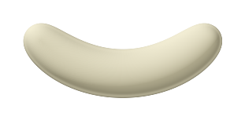
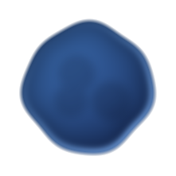
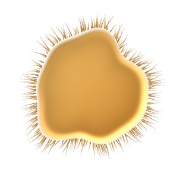

Time evaded
0:00.0
Speed boost
LUCA
The credits are rolling
Time evaded
0:00.0
held out against the Asgard archaea
★★★★★
for learning something today
Your lineage
Every branch you chose, from LUCA to the first eukaryote
Made with AI
AI (Claude) was used to help make this game, using ~250 million tokens ≈ 1 year of carbon capture by 1 tree aged 1–10 years.
We have donated 10 trees to be planted with ANTOMOS, a cool Canadian who plants trees the right way.
Last Universal Common Ancestor
From the first cell to complex life
LUCA
How long you held out against the Asgard archaea, in the game or the arcade game
Points in the protist arcade game: eat, evolve and survive nine rounds, from the vent to the sunlit surface
LUCA
P or Esc to resume
LUCA arcade
Outswim the Asgard archaeon

You. Click and hold anywhere to swim toward it.
Stay out of its reach. It divides and speeds up.Earth, over 4 billion years ago
Lineage
Energy 0%
Beyond reach
Round1of 9

Nitrogen fixersA LUCA arcade game
Eat · Evolve · Survive
Survive the bloom
2:00
Horizontal gene transfer
New ability
Protist Predator
P or Esc to resume